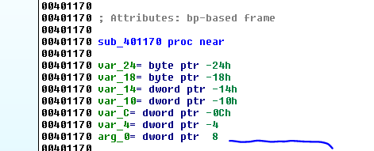
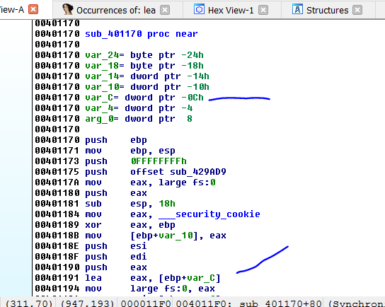
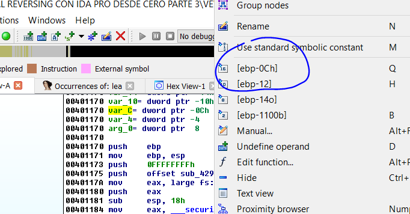
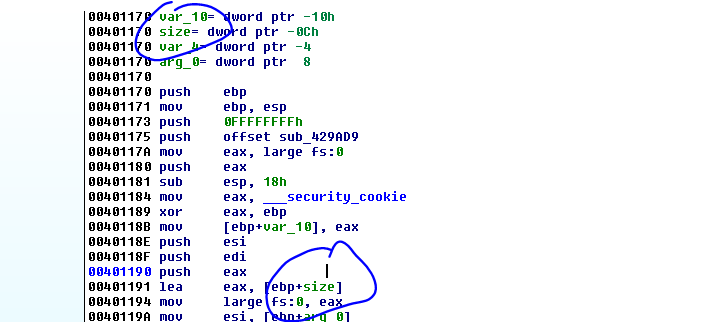
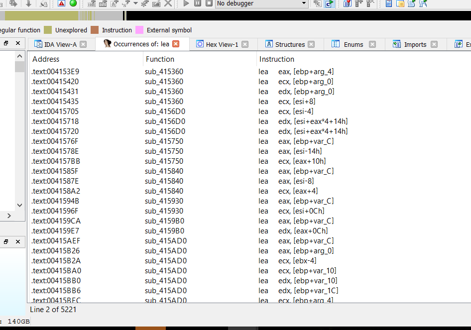
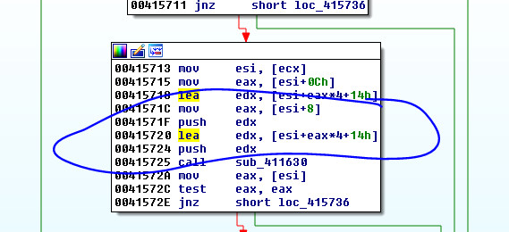
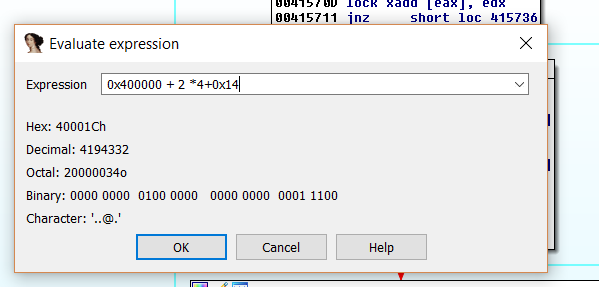

← Índice de los 69 tutes de IDA
Tute 5 · Más instrucciones
▶ video afín (mismo autor, en x64dbg): «06 Instrucciones 3» · se conecta con: Herramientas · IDA · Instrucciones · Flujo · Debugger · Números
INTRODUCCIÓN AL REVERSING CON IDA PRO DESDE CERO PARTE 5
Mas instrucciones
Seguiremos viendo las instrucciones principales y los usos en el código lógicamente cuando lleguemos a la parte del debugger veremos más ejemplos donde se ven los resultados de aplicar cada una de ellas en un contexto real.
LEA (LOAD EFFECTIVE ADDRESS) LEA A,B
La instrucción LEA mueve la dirección especificada en B en A. Nunca se accede al contenido de B siempre será la dirección o el resultado de la operación entre corchetes en el segundo operando. Se utiliza muchísimo para obtener las direcciones de memoria de variables o argumentos.
Veamos algunos ejemplos para aclarar.

Normalmente en las funciones detectadas por IDA existen argumentos que se le pasan a la misma, la mayor parte de las veces con la instrucción PUSH antes de llamar a la función.
Como vimos PUSH guardaba esos valores en el stack dichos valores son llamados argumentos.

Como vemos en la lista de variables y argumentos que hay en el encabezado de cada función, esta tiene un solo argumento en el stack pues en la lista solo hay un arg en este caso el arg_0.
Vemos también que la función tiene variables locales para las cuales reserva un espacio en el stack arriba de los argumentos, esos son los var_xx.
Ya explicaremos más adelante la ubicación exacta de los argumentos y variables en el stack por ahora solo importa que cada argumento o variable que usa una función tendrá una dirección donde esta ubicada y un valor tal cual cualquier variable en cualquier parte de la memoria.

Por lo tanto, en esta imagen vemos que cuando el programa en 0x401191 utiliza una instrucción LEA, lo que hace es mover la dirección del stack donde esta ubicada dicha variable a diferencia de si usara un MOV que movería el contenido o valor guardado en dicha variable.
O sea que LEA a pesar de usar un corchete solo mueve la dirección sin acceder al contenido de la misma porque en el fondo solo resuelve las operaciones dentro del corchete sin acceder al contenido y como EBP normalmente se usa como base de las variables y argumentos del stack en cada función, lo que hace realmente es sumarle o restarle una constante al valor de EBP que apunta a una dirección del stack tomada como base para dicha función.

Si hacemos clic derecho en esa variable vemos que la forma puramente matemática de escribirla a la cual se puede cambiar usando la tecla Q es [EBP-0C]
Por eso el LEA lo que hace realmente es resolver esa operación EBP -0C ya que EBP tiene una dirección del stack que será la base en esta función, restándole 0c obtengo la dirección de dicha variable.
Muchos se preguntan en este punto si no es más sencillo que IDA utilice la notación matemática pura para las variables y argumentos, en vez de EBP más o menos un tag.
El tema es que para el reversing es muy importante poder renombrar las variables y argumentos con nombres que le pongamos nosotros interactivamente a medida que nos vamos dando cuenta que rol cumple cada una y el nombre me servirá para orientarme.
No es lo mismo una variable que se llame EBP - 0C que yo la pueda renombrar a EBP + SIZE, si me doy cuenta por ejemplo de que allí guarda un size o sea un tamaño (se renombra usando la tecla N prueben) de ultima si necesito la expresión matemática pura la puedo consultar haciendo click derecho.

Por eso también LEA se usa para resolver operaciones que están dentro del corchete lo cual mueve luego al registro de destino el resultado, sin acceder al contenido del mismo.
P EJ:
LEA EAX ,[4+5]
Moverá 9 a EAX Y no moverá el contenido de la dirección 0x9 como haría unMOV EAX,[4 +5]
Y por eso
LEA EAX,[EBP - 0C]
Mueve el resultado de EBP - 0C que es la dirección de memoria de la variable que se obtiene al resolver EBP - 0C y la mueve a EAX.
MOV EAX ,[EBP - 0C]
Además de resolver EBP - 0C y obtener la misma dirección busca el contenido de la misma o sea el valor guardado en dicha variable y lo mueve a EAX.
Es muy importante que nos demos cuenta la diferencia del LEA y el MOV y como se termina utilizando el primero para obtener direcciones de variables y el segundo para obtener los valores guardados en la misma.

Vemos en el resultado de la búsqueda del texto LEA en el VEWIEVER que la mayor parte de las veces se usa para obtener direcciones de variables o argumentos del stack. (Las que tienen EBP más algo son mayoría)
El resto son operaciones combinadas entre registros y constantes cuyo resultado se mueve al primer operando que pueden dar resultados numéricos o alguna dirección también dependiendo del valor de los registros.

Al momento de resolver la operación si ESI vale por ejemplo 400000 y EAX vale 2 se moverá a EDX el resultado de .
0x400000 + 2 *4+0x14

O sea se moverá 0x40001c.
Hasta la parte 6.
Ricardo Narvaja